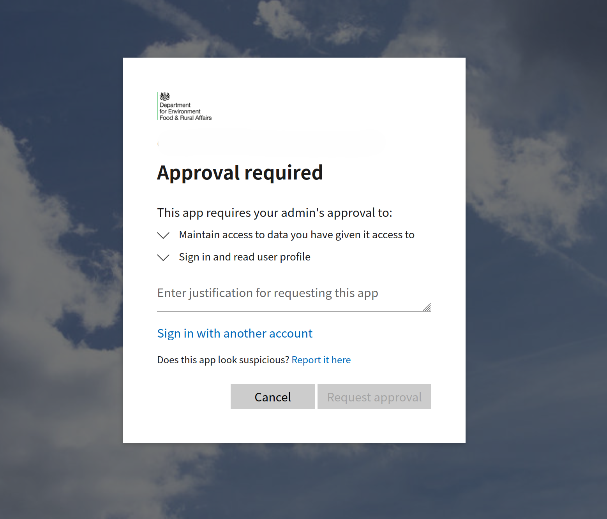

Microsoft Entra
Microsoft Entra is a cloud-based identity and access management service that helps organizations manage user identities and control access to resources. It provides features such as single sign-on (SSO), multi-factor authentication (MFA), and conditional access policies to enhance security and streamline user access to applications and services.
FCP services should use Microsoft Entra for authentication and authorization of internal users.
Example
An example repository has been created to demonstrate how to implement Microsoft Entra in an FCP service. The repository can be found in GitHub
App Registration
An Azure App Registration is created to represent the application in Microsoft Entra. This registration includes information about the application, such as its name, redirect URIs, and permissions.
Naming convention
App Registrations should follow a naming convention that is consistent and descriptive and should include the environment.
For example:
FCP-Payments-DevFCP-Payments-Prod
Permissions
Permissions can be added to the App Registration and subsequently users can be placed in those roles. This allows for a more granular control of access to the application.
Permissions should follow the principle of least privilege, meaning that users should only be granted the permissions necessary to perform their job functions.
Naming convention
Permissions should follow a naming convention that is consistent and descriptive and follow a dot notation format.
For example:
FCP.Payments.ViewFCP.Payments.Create
Credentials
Internal users will authenticate using their organisation Microsoft account. No new credentials need to be created specifically for FCP services.
For those without a Defra Microsoft account, a @defra.onmicrosoft.com account can be used.
Tenants
Defra has two Microsoft Entra tenants that require the App Registration to be created in.
O365_DEFRADEV
The O365_DEFRADEV tenant is used for proof of concept work and is a pre-requisite environment for Production use.
Teams must prove their setup in the O365_DEFRADEV tenant.
Teams can request a new App Registration including permission setup for this tenant through a ServiceNow ticket.
Defra
Once the proof of concept work has been completed, the App Registration can be created in the Defra tenant.
Any changes to the Defra tenant require a change request.
A series of standard changes exist to support the creation of the App Registration as well as some of the common subsequent tasks.
Teams can decide whether to use these standard changes or to raise a bespoke normal change to cover all activities.
The following ServiceNow standard change for a Type 1 registration can be used to create the App Registration.
It is recommended to create at least two App Registrations in the Defra tenant, one for Production and one for Non-Production.
This allows users to be placed in roles to support lower environment testing without risking access to Production data.
Permissions
Once the App Registration has been created, the permissions can be added to the App Registration through a further standard change
Users can be added to the roles through a further standard change
Project teams typically support the management of their own permissions initially, but longer term, access requests will be managed through the business through ServiceNow.
App registration approval
Once the App Registration has been created, it must be approved by CCoE before it can be used in Production.
Until it is services will receive the following message when attempting to use the App Registration.

There does not seem to be a standard change for this approval process, so teams should engage with CCoE to discuss how to request this approval.
FCP Platform
For services deployed to the FCP Platform, instead of creating the new App Registration in the Defra tenant, the App Registration should be created in the following tenants for each environment:
DefraCloudDevfor theDevelopmentandTestFCP Platform environmentsDefraCloudPreProdfor thePre-ProductionFCP Platform environmentDefraCloudfor theProductionFCP Platform environment
Due to the increased number of tenants utilised by the FCP Platform, there is no need to create multiple App Registrations in a single tenant as Production is already isolated.
Configuration rotation
App Registration credentials expire after a set period of time. This is typically 1 or 2 years.
These credentials should be rotated before they expire and the application reconfigured to use the new credentials.